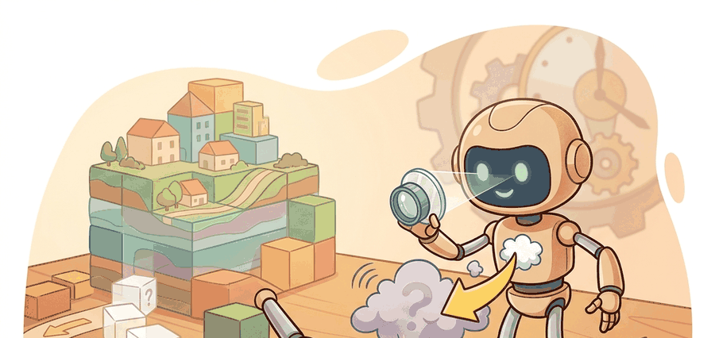

"A large generator without tokenization, evaluation loops, and transfer tooling is still not infrastructure; it is a demo."
A Platform That Treats World Models As Infrastructure

A robot arm reaches for a bin. Before it moves a millimeter in the real world, a world model has already simulated that grasp hundreds of times, flagged the failure modes, and updated the policy. That loop is now fast enough to run before deployment because NVIDIA Cosmos packages world modeling as a full engineering platform: tokenizers, synthetic-data pipelines, transfer tooling, and evaluation harnesses, not just a model checkpoint. Right now, as physical AI teams face a data bottleneck that no amount of real-world collection can solve quickly, this platform approach is why Cosmos matters. You will work through how each layer of the stack enables that loop and where the real engineering constraints live.
Read this section as a systems stack. The world model is only one layer. Around it sit tokenizers, synthetic-data generation paths, transfer tools, guardrails, and post-training workflows specialized for physical AI.
The platform is the point. A large generator without tokenization, manifests, and evaluation loops is still not enough for physical-AI engineering, even if the underlying PyTorch checkpoints or Isaac assets look strong in isolation.
Problem First
Many world-model papers stop at one benchmark or one model family. Physical AI teams need something broader: a way to generate and transfer scenarios, train customized models, and evaluate policies at scale. Cosmos matters because it explicitly presents world models as platform infrastructure for those tasks.
Core Model
The Cosmos platform frames a world foundation model as a general-purpose model that can be specialized into downstream world models for robots, vehicles, or smart infrastructure. In that framing, the generator is part of a larger map: $$\text{context} \rightarrow \text{world model} \rightarrow \text{synthetic data / simulation / action model} \rightarrow \text{policy evaluation}. $$
The 2025 platform paper emphasizes digital-first physical AI: learn a policy model, a digital twin of the agent, and a digital twin of the world before expensive real-world iteration. More recent official NVIDIA materials position Cosmos 3 as an open omnimodal world model that connects understanding, generation, simulation, and action across text, image, video, audio, and actions.
The scientific point for readers is that scale alone is not the story. Cosmos couples scale with tooling: tokenizers, transfer models, distributed pipelines, and benchmarks that try to make synthetic world generation operational for embodied development rather than merely impressive in a demo reel.
Consider how the tokenizer fits into this concretely. A continuous video frame cannot be fed directly into a discrete transformer. Cosmos-Tokenizer compresses spatiotemporal patches of video into a compact discrete token vocabulary, similar in spirit to how a text tokenizer converts characters into subword ids. A 512x512 video clip at 24 fps is reduced to a sequence of thousands of tokens rather than tens of millions of raw pixel values; the world model then predicts the next token in that compressed space and the decoder reconstructs the video. This matters for physical AI because the same tokenizer must handle wrist-camera video, overhead sensors, and lidar projections consistently: if each modality uses a different compression scheme, the generated futures cannot be aligned across sensor streams, and multi-camera policy evaluation becomes unreliable.
When loading Cosmos-Tokenizer for multi-camera setups, use the same checkpoint variant (e.g., Cosmos-Tokenizer-CV4x8x8) for every sensor stream in a given training run. Mixing spatial compression ratios across streams (for example, 4x8x8 on wrist cameras and 8x8x8 on overhead cameras) produces token sequences of different temporal stride, so the world model cannot align frames across views and cross-camera consistency losses will silently degrade. Check the temporal_compression field in each tokenizer config before combining streams; mismatches do not raise an error at load time.
A world model without tokenizers and evaluation loops is roughly like a very realistic film set with no script, no camera crew, and no way to tell whether the actors actually learned their lines. The demo reel looks stunning; the production never ships.
Curate multimodal world data, post-train a world model on embodiment-specific context, generate scenarios or synthetic trajectories, evaluate policies on matched panels, then feed the failures back into the data and post-training pipeline. The platform value lies in the loop, not only in the base model.
Minimal Probe
The manifest below captures the kind of scenario specification a physical-AI world-model platform needs. It is less glamorous than the generator, but without this contract synthetic data cannot be audited or compared across robots and vehicles.
# Describe one physical-AI scenario for a world-model pipeline.
# Structured manifests make synthetic data auditable and reusable.
scenario = {
"camera_setup": "front-left, front-right, wrist",
"embodiment": "warehouse manipulator",
"task": "bin pick with occluded package",
"stressors": ["dim light", "forklift crossing"],
"evaluation_target": "pick success without emergency stop",
}
print({"fields": len(scenario), "task": scenario["task"]}){'fields': 5, 'task': 'bin pick with occluded package'}
Expected behavior: The output is simple by design. A usable platform starts from well-specified scenario manifests, because every synthetic video, rollout, or evaluation artifact must be traceable back to a concrete embodiment and task contract.
A handwritten manifest is trivial, but the real shortcut is the NVIDIA Cosmos ecosystem and related repositories such as Cosmos-Tokenizer, Cosmos-Framework, and the transfer-model repositories such as Cosmos-Transfer. In practice these are often paired with PyTorch serving, Isaac simulation assets, TensorBoard, and Weights & Biases evaluation runs. They absorb model packaging, tokenization, serving, and distributed workflow glue that would otherwise take hundreds of lines to rebuild.
Practical Recipe
- Version every scenario manifest together with the generated assets.
- Keep transfer, generation, and evaluation outputs in separate folders so you can trace which stage introduced a failure.
- Do not compare robot and vehicle results unless the synthetic-world contract is matched on camera layout, horizon, and task definition.
- Evaluate whether the platform shortens the policy-improvement loop, not merely whether it produces realistic videos.
Platform scale can hide domain mismatch. If the scenario manifest and evaluation contract are vague, a large world-model stack can produce polished artifacts that are still useless for the actual robot or vehicle task.
The digital-twin loop breaks down when the simulated embodiment diverges from the real one in ways that the world model cannot represent: a real gripper with worn compliance, a sensor with latency spikes, or lighting that shifts between day and night shifts. In those cases the synthetic policy scores remain high while real-world success rates drop, and the mismatch is not visible until hardware trials. The diagnostic is to monitor the gap between sim and real evaluation metrics across time; a growing gap signals that the sim contract needs updating before the next training cycle, not after a hardware failure.
A warehouse robotics team may use Cosmos-style world models to synthesize rare crossing-traffic scenes, then evaluate a grasping or navigation policy on that edge-case panel before new hardware tests. The productivity gain comes from platform reuse: once the scenario and evaluation contract exist, new world-model variants can be compared quickly and systematically with PyTorch services, Isaac scenes, OpenCV inspection tools, and TensorBoard traces.
The frontier here is platform integration. Teams are moving toward world models that not only generate scenes but also support transfer from simulation to camera domains, generate action-conditioned futures, and plug directly into evaluation loops for robots and autonomous vehicles. The open question is how much of that stack can remain open, auditable, and reproducible as the models grow larger.
For synthetic data and randomization strategy, revisit Chapter 13. For robot datasets and scaling laws that feed world models, connect to Chapter 24. For deployment concerns, compare with Chapter 55.
Cosmos is useful pedagogically because it widens the frame. It reminds the reader that embodied AI teams do not adopt world models in isolation. They adopt pipelines: tokenization, generation, transfer, safety checks, serving, and evaluation. A model can be scientifically interesting and still be operationally weak if those surrounding tools are missing. Cosmos-Tokenizer, Cosmos-Framework, PyTorch inference services, JAX post-training experiments, Isaac assets, OpenCV diagnostics, and the public platform repositories make that tooling layer unusually visible.
The recent Cosmos 3 materials also point toward omnimodal integration, where action is no longer a side channel but part of the shared model vocabulary. That is a strong signal about where the field is heading, even if each application domain still needs careful benchmarking before the platform claims can be trusted locally.
Can you explain why a world-model platform needs tokenizers, manifests, and evaluation pipelines in addition to a large generator, and which of those pieces you would audit first after a synthetic-data failure?
Cosmos matters because it treats world models as physical-AI infrastructure: generation, transfer, tokenization, and evaluation all have to work together for the model to matter in practice.
Pick one physical-AI application, such as a warehouse arm or an autonomous vehicle, and write the scenario manifest fields you would require before accepting synthetic data from a Cosmos-style pipeline.
Bibliography & Further Reading
Primary References And Tools
NVIDIA. "Physical AI with World Foundation Models." (2026). https://www.nvidia.com/en-us/ai/cosmos/
The main product and ecosystem page is the current primary source for Cosmos capabilities and tooling.
NVIDIA Research. "Cosmos World Foundation Model Platform for Physical AI." (2025). https://arxiv.org/abs/2501.03575
The platform paper explains the digital-first physical-AI framing.
NVIDIA. "NVIDIA/cosmos GitHub Repository." (2026). https://github.com/NVIDIA/cosmos
The repository provides the most concrete public entry point into the platform stack.